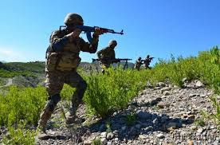
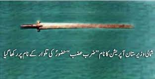
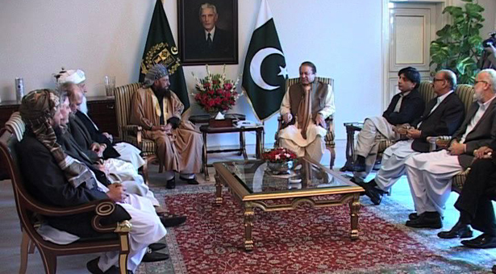
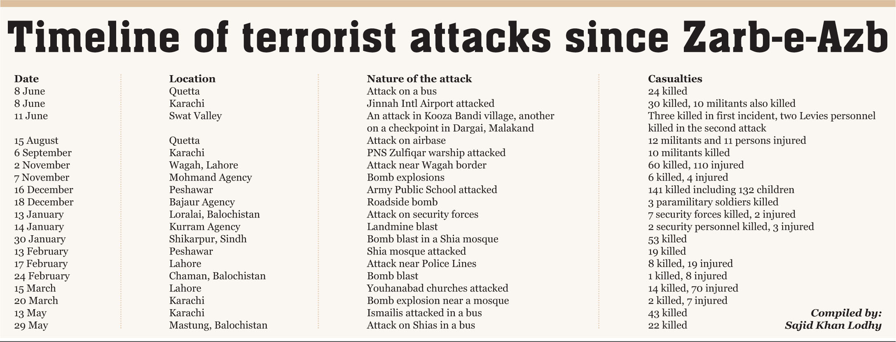
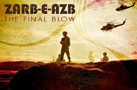
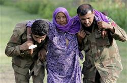
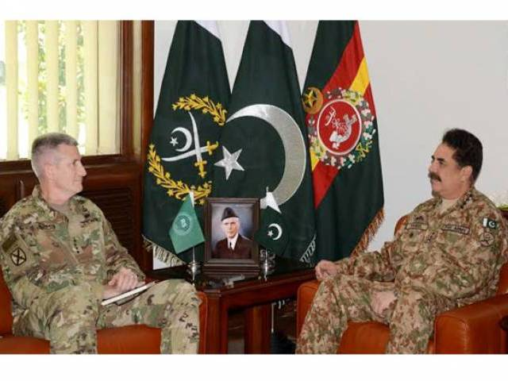

HEROS OF ZARB-E-AZB
Man At Their Best

")


 1
1 2
2 3
3 4
4 5
5 6
6 7
7 8
8 9
9 10
10HISTORY OF OPERATION ZARB-E-AZB

Operation Zarb-e-Azb was a joint military offensive conducted by the Pakistan Armed
Forces against various militant groups, including the Tehrik-i-Taliban Pakistan (TTP),
the Islamic Movement of Uzbekistan, the East Turkestan Islamic Movement,
Lashkar-e-Jhangvi,Al-Qaeda, Jundallah and the Haqqani network.The operation was
launched on 15 June 2014 in North Waziristan along the Pakistan-Afghanistan border
as a renewed effort against militancy in the wake of the 8 June attack on Jinnah
International Airport in Karachi, for which the TTP and the IMU claimed responsibility.
As of 14 July 2014, the operation internally displaced about 929,859 people belonging
to 80,302 families from North Waziristan.
Part of the war in North-West Pakistan, up to 30,000 Pakistani soldiers were involved
in Zarb-e-Azb, described as a

Zarb-e-Azb
"Azb" also refers to the "sword" owned by the Islamic

For the first time, the Pakistani military implemented a military strategy called "Seek, Destroy, Clear, Hold."The Pakistani military will seek the target. Once found, it will be destroyed. When destroyed, the infrastructure, bodies and weapons will be cleared and the area will be held both during this time and after its completion to ensure post-operation security and infrastructure rebuilding and/or area rehabilitation. The Seek and Destroy component is from the Vietnam War whereas the Clear and hold component is from the Iraq War. The Pakistani military combined the two doctrines as a single doctrine for the operation to be successful.


"comprehensive operation"
to flush out all foreign and local militants hiding in North Waziristan.The operation has received widespread support from the Pakistani political, defence and civilian sectors. As a consequence, the overall security situation improved and terrorist attacks in Pakistan dropped to a six-year low since 2008. Zarb-e-Azb was followed by Operation Radd-ul-Fasaad which began in February 2017, following a resurgence in terrorist incidents.ETYMOLOGIES:
Zarb-e-Azb
(ضربِ عضب)
means:"sharp and cutting strike".
"Azb" also refers to the "sword" owned by the Islamic
"PROPHET MUHAMMAD(صلى الله عليه وسلم)",
which he used in the battles of "Badr" and "Uhud".STRATEGY:
For the first time, the Pakistani military implemented a military strategy called "Seek, Destroy, Clear, Hold."The Pakistani military will seek the target. Once found, it will be destroyed. When destroyed, the infrastructure, bodies and weapons will be cleared and the area will be held both during this time and after its completion to ensure post-operation security and infrastructure rebuilding and/or area rehabilitation. The Seek and Destroy component is from the Vietnam War whereas the Clear and hold component is from the Iraq War. The Pakistani military combined the two doctrines as a single doctrine for the operation to be successful.
MAP'S OF LOCATION OF ZARB-E-AZB
BACKGROUND:

Peace Negotiations With Taliban
BACKGROUND:

Jinnah Airport Attack
Time Line

Time Line
Yearly Progress

Yearly Progress
Final Below

Final-Below Of Zarb-E-Azb
Management Of Citizens
Management Of diplayed Citizens
Return Of IDP'S

Return Of IDPS
Success Ratio

Success Ratio
Global Acknowledgment

Global Acknowledgment
International OverView

International OverView Of Operation
.png "Google")
.jpg "Youtube")
.jpg "Twitter")